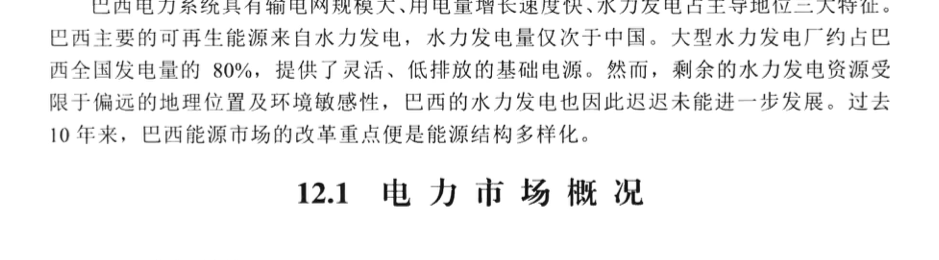
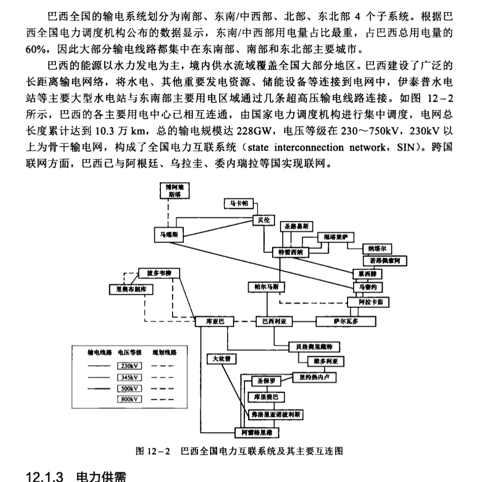
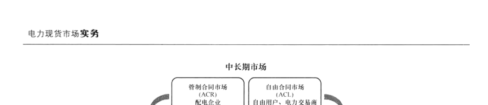
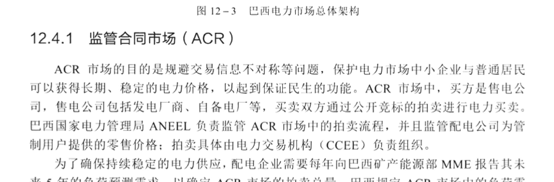
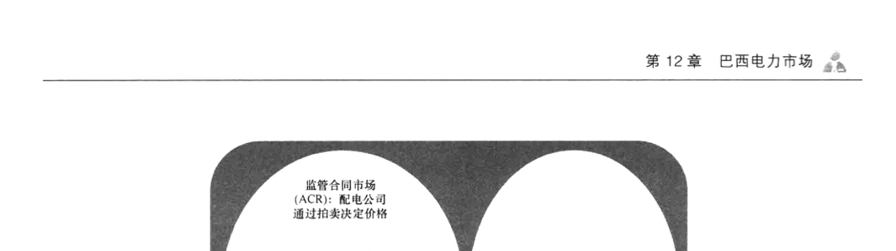
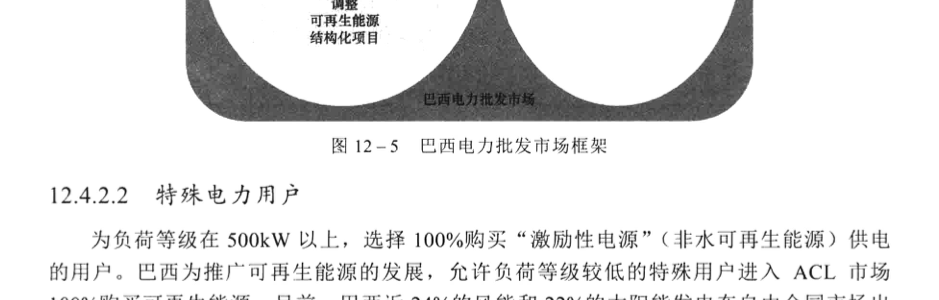
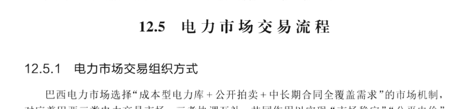
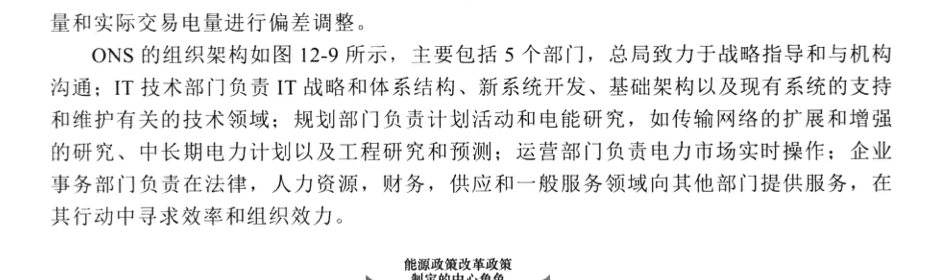
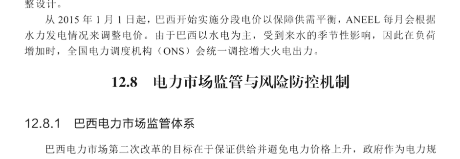
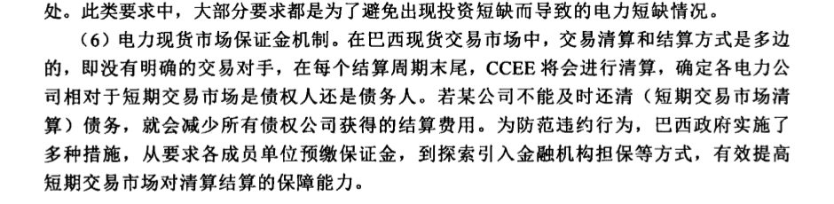

巴西电力市场
巴西电力系统具有输电网规模大、用电量增长速度快、水力发电占主导地位三大特征。巴西主要的可再生能源来自水力发电，水力发电量仅次于中国。大型水力发电厂约占巴西全国发电量的 80%，提供了灵活、低排放的基础电源。然而，剩余的水力发电资源受限于偏远的地理位置及环境敏感性，巴西的水力发电也因此迟迟未能进一步发展。过去10年来，巴西能源市场的改革重点便是能源结构多样化。
12.1 电力市场概况
12.1.1 电源结构
截至 2020 年底，巴西全国总装机容量约 170.09GW，其中水力发电装机占比最重，达 64.13%。巴西发电结构情况如图 12–1 所示。巴西水资源蕴藏量估计为 260GW，其中仅 40%在运营，预计在未来几十年中，水力发电仍将在巴西能源构成中占主导地位。其次是火力发电，在总装机中占 24.21%。其中天然气是最重要的化石燃料，燃气发电占总装机容量的 9%；石油和煤炭占巴西总装机容量的 8%。

近年来，巴西新能源发电发展迅速，截至2021年底，风电装机约15.6GW，约占全国总装机的9.04%；太阳能装机突破13GW，其中大型太阳能发电厂装机容量达4.2GW，相当于全国电力供应的2.4%。此外，巴西两个核电站占总装机容量的1.17%。
12.1.2 电网结构
巴西全国的输电系统划分为南部、东南/中西部、北部、东北部4个子系统。根据巴西全国电力调度机构公布的数据显示，东南/中西部用电量占比最重，占巴西总用电量的60%，因此大部分输电线路都集中在东南部、南部和东北部主要城市。
巴西的能源以水力发电为主，境内供水流域覆盖全国大部分地区。巴西建设了广泛的长距离输电网络，将水电、其他重要发电资源、储能设备等连接到电网中，伊泰普水电站等主要大型水电站与东南部主要用电区域通过几条超高压输电线路连接。如图12-2所示，巴西的各主要用电中心已相互连通，由国家电力调度机构进行集中调度，电网总长度累计达到10.3万km，总的输电规模达228GW，电压等级在230～750kV，230kV以上为骨干输电网，构成了全国电力互联系统（state interconnection network，SIN）。跨国联网方面，巴西已与阿根廷、乌拉圭、委内瑞拉等国实现联网。

12.1.3 电力供需
截至2021年底，巴西全国发电量达567.9TWh，其中水力发电363.46TWh，占比最高，达全国总发电量的64.0%；其次为非水可再生能源发电（包括风电、太阳能、生物质能发电），达237.78TWh，占全国总发电量的18%；火力发电为96.54TWh，占比为17%；
核能发电量占比1%；巴西全国用电量达509.1TWh，电力出口量41.31TWh，电力进口量为0.219TWh。
12.2 电力市场建设历程
巴西电力市场经历了两次体制改革。第一阶段发生在20世纪90年代，首次改革尚未全面实施便陷入了供应危机，之后巴西于2004年启动了第二次电力市场化改革并实施至今。
12.2.1 首次改革
第一次改革发生在20世纪90年代。1995年巴西通过宪法第六修正案，该法案打破了针对私有企业的壁垒，允许并鼓励私营企业参与水力发电行业，标志着巴西电力市场化改革的开始。首次电力市场化改革的措施包括完全拆分发电和供电、成立独立的巴西国家电力调度机构（ONS）、建立独立的监管机构（巴西国家电力管理局，ANEEL），以及建立电力批发市场等。改革持续到2001年，由于当年南美地区严重旱情，导致巴西水库需水量严重不足，而改革制度并未能为电力行业吸引到足够的投资，巴西陷入严重的能源危机，出现拉闸限电、强制性配给政策，标志着巴西首次电力市场化改革的失败。表12－1中详细地展示了巴西第一次电力市场化改革的重要节点。
| 年份 | 首次电力改革重要事件 |
|---|---|
| 1993 | 8.631号法令，清算债务并废除保证薪酬 |
| 1995 | 宪法第六修正案，允许私营企业涉足水力发电 |
| 1995 | 8.987号法令，确立电力供应许可制度 |
| 1995 | 9.074号法令，放宽对用电大户的供电限制，并成立独立发电公司 |
| 1995 | 配电公司首次私有化 |
| 1997 | 成立独立的监管机构［巴西国家电力管理局（ANEEL）］ |
| 1997 | 发电公司（Cachoeira Dourada）首次私有化 |
| 1998 | 成立独立电力系统运营商（ONS）以及电力批发市场（MAE） |
| 2001 | 拉闸限电 |
1995年，巴西政府公布了一系列法案措施推动电力行业竞争，其中包括：①巴西通过宪法第六修正案，允许私营企业参与水力发电投资竞争；②同年颁布的特许权法（8.987号法令）针对国家垄断型输电、配电行业加设价格上限监管机制，并要求要对水力发电厂、输电线路以及配电服务区域的电力服务进行公开竞标；③9.074号法令
允许成立独立发电公司（IPP），独立发电公司可与一般发电公司进行竞争，并准许配电公司私有化。
1996 年，巴西成立独立的联邦电力监管机构，巴西国家电力管理局（ANEELI），主要负责执行监管职能，包括电价监管、电力供应许可权的授予、电力拍卖等相关事项。ANEELI 的运作经费来自电价中划扣的 0.5%的税收。
然而，首次改革却被 2001 年的一次重大的电力供应危机所打断。导致危机的主要原因是在巴西首次电改中，改革制度的安排没能为电力行业吸引到足够的投资，发电量的增长无法跟上电力负荷的增长。电力供需之间的严重不平衡，导致主要依靠水力发电的巴西水库蓄水逐渐耗尽。最终在 2001 年，在严重旱情的冲击下，巴西水库蓄水量达到警戒值。为避免接下来的旱季出现水库资源枯竭的情况，巴西政府不得不于该年 5 月强制实施了用电配给政策，施行拉闸限电措施，这一强制性配给政策持续至 2002 年 5 月结束。此次重大电力供应危机导致了严重的经济后果（用电量下降 7%，损失近 400 亿美元）和政治后果（总统 2002 年竞选失败，政权更换），促使政府对改革制度框架的重新审视。
12.2.2 第二次改革
巴西第二次电力市场化改革开始于 2003 年，巴西新政权上台后开始讨论新的电力市场监管制度框架。第二次改革吸取了第一次改革中发电行业投资滞后短缺的经验教训，主要针对电力投资以及政府在电力规划中的重要决策地位进行改革，主要目标在于保证供给并避免电价上升。具体改革历程如表 12–2 所示。
| 年份 | 巴西第二次电力改革事件 |
|---|---|
| 2002 | 政权交换，承诺进行改革 |
| 2003 | 确立新的制度模式 |
| 2004 | 通过新的监管架构 |
| 2004 | 对已投产电源开展拍卖，就现有电力容量进行协商 |
| 2005 | 对新投产电源开展拍卖，就电力容量扩充进行协商 |
为加强国家政府对能源政策规划的决定性作用，第二次改革中重点启用了国家能源政策委员会（CNPE）。该组织成立于巴西第一次市场化改革，但直到第二次电力市场化改革中才得到重用，负责能源战略规划的中心角色。同时，为了加强政府对于能源规划的监管、避免发电行业投资短缺，第二次改革中增加了三个新政府部门：
（1）能源研究公司（EPE）。负责协助政府能源部门进行电力行业规划、扩建和拍卖。
（2）电力交易机构（CCEE）。负责巴西电力现货市场（短期市场），通过确定有效容
量，管理调整合同容量来进行市场平衡。
（3）电力部门监督委员会（CMSE）。由能源相关的政府部门（能源部、监管机构）、巴西国家电力调度机构（ONS）、电力交易机构（CCEE）和能源研究公司代表共同组成，主要负责对能源扩建投资方面的协调和监管，确认电力供应与电力需求的匹配情况。
另外，2004 年的巴西电力市场化改革中，还对电力市场的运营规则及机制进行了调整，主要规定能源交易必须通过合同进行，同时建立了两个不同的中长期市场：
（1）5163 号法案规定所有能源市场交易必须通过合同进行，以降低电力项目的风险性，从而吸引投资融资，避免发电行业投资滞后导致的电力短缺。同时，法案还对售电量低于合同电量，却在电力现货市场进行投机交易的市场主体给予额外惩罚。
（2）建立了监管合同交易市场（ambiente de contratação regulada，ACR）与自由合同交易市场（Ambiente de Contratação Livre，ACL）。其中，监管合同交易市场主要由配电公司进行未来 5 年的负荷预测，并通过拍卖的方式选择发电公司，从中标的发电公司处购买电力。拍卖的目的是促进最佳资源和技术的使用，降低电能生产成本，改善市场透明度和效益。在这一模式下，也可以促进新发电参与者进行发电投资并参与进入市场。监管合同交易市场中，对于存量电厂所产出的电能量称为"已投产电源"，对于新增电厂所产出的电能量称为"新投产电源"。两种以不同的方式对待，具体操作将于后节进行具体描述。2004 年，巴西电力市场进行了首次针对"已投产电源"的有效容量拍卖，2005 年，首次"新投产电源"拍卖完成。而自由合同交易市场，是针对具有议价能力的大型电力用户可以参与的自由双边中长期电力市场。
目前，巴西第二次电力市场化改革仍在延续，但是在电力需求不断上涨的背景下，巴西面临着水电占比下降、高成本发电能源占比增加、绿色低碳压力等问题，这些问题也导致巴西的零售电价在过去的 20 年中不断上涨。如今的巴西电力行业仍面临着诸多挑战，包括如何提供绿色、可负担的能源供应，以支持巴西的经济增长。
12.3 电力工业结构现状
12.3.1 发电
在发电方面，巴西电力市场化改革后，发电市场竞争性较强，截至 2022 年共有超过 2000 家市场主体完成注册，如表 12 - 3 所示。
| 机构类型 | 数量 |
|---|---|
| 自备发电厂商 | 42 |
| 发电厂商（公用事业） | 32 |
续表
| 机构类型 | 数量 |
|---|---|
| 配电公司 | 46 |
| 交易商 | 141 |
| 独立发电公司 | 414 |
| 自由消费者 | 1427 |
| 总计 | 2102 |
发电主体中，大部分为独立发电厂商，各发电主体市场份额较为分散。其中，巴西最大的电力公司 Chest 公司的发电量仅占总装机容量的不到 8.9%。不过，在巴西前十大发电公司中（详情如表 12-4 所示），除 Tractebel 和 AES Tiete 为私营发电企业之外，其余均为巴西国有发电公司，由此可见国有企业无论在联邦层面还是州层面上，都仍是电力行业的主导。
| 发电公司 | 地区 | 发电量（MWh） | 巴西市场份额（%） | 所有权 |
|---|---|---|---|---|
| Chesf | 东北 | 10615 | 8.9 | 联邦政府 |
| Furnas | 南部 | 9703 | 8.1 | 联邦政府 |
| Eletronorte | 北部 | 9131 | 7.6 | 联邦政府 |
| Cesp | 东南 | 7455 | 6.2 | 州政府 |
| Tractebel | — | 7145 | 6.0 | 私有 |
| Itaipu | 南部/东南 | 7000 | 5.9 | 两国共有 |
| Cemig | 东南 | 6782 | 5.7 | 州政府 |
| Petrobras | — | 6200 | 5.2 | 联邦政府 |
| Copel | 南部 | 4547 | 3.8 | 州政府 |
| AES Tiete | 东南 | 2652 | 2.3 | 私有 |
12.3.2 输电
巴西输电行业，主要以私有化企业为主，私有化程度达 87%。但是私人投资仅用于电网扩建，私有输电公司可投资正在建设中的输电线路，并需要投标竞争，经过 ANEELI 的批准才可参与投资。目前，巴西较大的输电企业包括 Elecnor、EDP Brazil、CPFL、Eletrobras、Eletropaulo 等，其中隶属于 ENEL 的私营电力公司 Eletropaulo 在巴西市场份额最大（10.5%），而巴西电网运营商 Eletrobras 拥有 52%的输电基础设施份额。
12.3.3 配电
巴西的配电行业大部分由私营企业运营，在排名前10的公司（如表12-5所示）中，有8家完成了私有化私营配电企业约占市场份额的60%。根据总用电量来看，Eletropaulo是规模最大的配电公司，紧随其后的是Cemig和Copel，分别归米纳斯吉拉斯州（Minas Gerais）和巴拉那洲政府所有。
| 配电公司 | 地区 | 用电量（GWh） | 巴西市场份额（%） | 所有权 |
|---|---|---|---|---|
| Eletropaulo | 圣保罗州 | 2952 | 11.7 | 私有 |
| Cemig | 米纳斯吉拉斯州 | 2003 | 7.9 | 州政府 |
| Copel | 巴拉那州 | 1839 | 7.3 | 州政府 |
| CPFL | 圣保罗州 | 1651 | 6.5 | 私有 |
| Light | 里约热内卢州 | 1523 | 6.0 | 私有 |
| Celesc | 圣卡塔琳娜州 | 1185 | 4.7 | 私有 |
| Coelba | 巴伊亚州 | 1179 | 4.7 | 私有 |
| Elektro | 圣保罗州 | 942 | 3.7 | 私有 |
| Celg | 戈亚斯州 | 838 | 3.3 | 私有 |
| Celpe | 伯南布哥州 | 787 | 3.1 | 私有 |
12.4 电力市场架构及特点
巴西电力市场从时间周期上分，可以主要分为中长期市场和短期交易市场（电力现货市场）。其中，中长期市场又可以根据参与的用户分为监管合同交易市场（ACR）和自由交易市场（ACL）。
其中，监管合同交易市场（ACR）是巴西电力市场重要组成部分，约承担了70%左右的电量交易。主要功能是保障绝大多数电力用户的用电需求，特别是议价能力较低的中小企业用户和普通居民用户。ACR市场中，购电方为配电公司代理小型用户购电，发电方为拍卖中标的新增电厂生产的"新投产能源"，以及存量电厂所产出的"旧投产能源"，交易合同多为20～30年的长期购电协议，价格及期限均受到政府严格管制，以确保发用电两侧长期的供需稳定。
自由合同交易市场（ACL）是竞争型市场，主要通过市场主体双边协商形成市场合同。通过市场竞争促进发用电主体提升效率、降低成本，促进发电领域投资发展。能够参与ACL的用户主体一般为满足较高的电压等级的工业大用户。因此，ACL的市场份额在25%～30%左右。
短期交易市场，也是巴西的电力现货市场，所占市场份额约5%，以现货合约为主。主要功能是作为ACR与ACL两市场的补充，在实际电力交易执行与合同产生偏差时，弥补供需缺口，保障电力实时平衡。
三个市场的关系如图12-3所示。

12.4.1 监管合同市场（ACR）
ACR 市场的目的是规避交易信息不对称等问题，保护电力市场中小企业与普通居民可以获得长期、稳定的电力价格，以起到保证民生的功能。ACR 市场中，买方是售电公司，售电公司包括发电厂商、自备电厂等，买卖双方通过公开竞标的拍卖进行电力买卖。巴西国家电力管理局 ANEEL 负责监管 ACR 市场中的拍卖流程，并且监管配电公司为管制用户提供的零售价格；拍卖具体由电力交易机构（CCEE）负责组织。
为了确保持续稳定的电力供应，配电企业需要每年向巴西矿产能源部 MME 报告其未来 5 年的负荷预测需求，以确定 ACR 市场的拍卖总量。巴西规定 ACR 市场中的负荷需求必须 100%被电量合同覆盖，实现"需求引导供应"。巴西竞价制度是价低者中标（即：减价拍卖）。报价最高的首次报价价格由巴西矿产能源部 MME 和能源研究公司 EPE 确定。中标企业的结算价格以其申报价格为准，结算电量按照需求总量，从低价电量向高价电量以此累计。
ACR 市场为促进电源项目投资建设和发展，要求市场主体直接签订多年的长期用电合同。ACR 市场中拍卖的合同类型如图 12-4 所示。
12.4.1.1 未来电量合同
"新投产电源"主要签署 A-3 和 A-5 类合同，以满足未来长期的电力需求。此类拍卖的合同多为 20～30 年。建设时间较短的"新投产电源"会参与 A-3 拍卖，例如火电厂（煤电项目除外）、风电项目以及热电联产（CHP）项目。而大型水力发电和煤电项目通常参与 A-5 拍卖。"已投产电源"则主要签署 A-1 类合同，来满足现行市场的负荷需求。
12.4.1.2 备用拍卖
备用拍卖为了增强供电保障，由于在此类拍卖中进行交易的容量都是电网系统的备用

容量，向发电厂商所支付的费用包括在最终电力价格中。
12.4.1.3 调整拍卖
其目的在于使配电公司之间进行内部交易，合同容量过剩的配电公司可向合同容量不足的公司出售部分合同容量，最长期限为2年。
监管合同市场的标准拍卖合同类型（CCEAR）由巴西第 5163/04 号法令确定，详情见表12-6。
| 合同类型 | 卖方 | 买方 | 说明 |
|---|---|---|---|
| 按数量（CCEARQ） | 发电厂商 | 配电公司 | 主要是连接到全国电力互联系统的水力发电方和配电公司。在此合同中，卖方面临水文风险（无论是否由国家电力调度机构派遣）。因此，该部分需要在工厂的预期收入表中合理定价 |
| 按供应量（CCEARD） | 发电厂商（热力和替代能源） | 配电公司 | 针对与配电公司签订合同时的热能和替代能源发电方。与按数量不同的是，此合同标准中风险由交易双方分摊，且在每次拍卖出价中标明 |
| 调整 | 发电厂商 | 配电公司、自由消费者、特殊消费者、自营生产者 | 适用于调整竞价拍卖，其中配电公司将现有合同与预测的偏差进行匹配，在为期2年的供应期限内，允许第二年在第一年的基础上增加5% |
| 储备能源 | 发电厂商（生物质能、风能、太阳能和小型水力发电） | 配电公司、自由消费者、特殊消费者、自营生产者 | 促进系统的物理覆盖与每个参与工厂的单独物理覆盖范围之间的平衡。在特定的拍卖会上，生物质能、风能、太阳能和小型水力发电厂与贸易商会的任一CONUER代理商（即配电公司、自由消费者、特殊消费者以及自营生产者）签订合同（统称为CER） |
同时，考虑到发电项目投运前后不同的成本回收需求，ACR 市场将"新投产项目"与"已投产项目"区分开来，分别进行拍卖，两者均在监管合同市场以不同方式进行协商，详情如表12-7所示。其中，"新投产电源"拍卖主要用于满足未来几年预测的需求增长，以水电电源和火电电源为主。并且"新投产电源"所签署的合同期限相对较长，以A-3 和 A-5 类合同为主。通常情况下，每年会进行两次"新投产能源"拍卖，以便供应未来3 年和5 年所需电量。在"新投产电源"参加拍卖后，必需执行特许权经营合同15年以上才可以转变成为"已投产电源"；"已投产电源"的定位是对现有市场需求进行响应。在"旧投产能源"的拍卖中，合同期较短，一般为3～8年，此类拍卖通常在交付开始之前1年进行。
| 电源类别 | 定义 | 合同期限 | 拍卖类型 | 新能源类型 | 特许权合同期限 | 交付类型 |
|---|---|---|---|---|---|---|
| 新投产电源 | 新电厂产出电能 | 20~30年 | A-3类合同和A-5类合同 | 水力发电 | 30年 | 以电力交付进行交易 |
| 新投产电源 | 新电厂产出电能 | 20~30年 | A-3类合同和A-5类合同 | 火力发电 | 20年 | 容量方式进行交易 |
| 已投产电源 | 现有电厂产出电能 | 3~8年 | A-1类合同 | — | — | — |
12.4.2 自由合同市场（ACL）
巴西自由合同市场（ACL）放开大用户用电选择权，赋予发电厂商发电计划权，是具有最大市场流动性的电力市场，合同期限以短期、中期为主，交易价格也体现了电力供需真实特征，如图12-5所示。2004年，巴西第二次电力市场化改革之后，ACL市场的电力交易额显著增长，截至2021年底，通过ACL交易达成的电量已占巴西全社会用电量的31%，为工商业用电量的86%。
参与ACL市场的主体包括电力用户（符合要求）、发电厂商、巴西电力交易商以及电力进出口企业等。ACL 允许市场主体之间通过自主双边协商的方式，与发电企业签订双边购电协议，交易双方自行对交易价格、交易规模、合同期限进行协商。
ACL市场的结算由合同双方自行结算，除大型水电外的可再生能源发电（包括风电、太阳能发电、生物质发电、不超过1MW小水电及符合要求的热电联产机组等，也成为"激励性电源"）合同同时享受巴西的政府补贴。
同时，为了进一步提升ACL市场流动性，巴西政府允许ACL的电力用户转让自身未能使用的剩余电力。合同转让过程中，原合同相关方的责任和义务维持不变，包括基础条件和售电方承担的风险范围。合同转让的电量规模与合同期限不能超过原合同。通过该措施，降低了自由电力用户因合同电量的剩余带来的财务损失，提高了自由交易市场的流动性，激发了市场活力。
对于参与ACL的电力大用户分为自由电力用户、特殊电力用户两类。
12.4.2.1 自由电力用户
为1995年7月7日接入系统、负荷等级在3MW以上、电压等级为69kV以及1995年7月7日后并网、负荷等级在3MW以上、电压等级为23kV的用户。自由用户既可以购买常规能源发电电量、也可购买"激励性电源"发电电量；同时，大部分自由用户可以由之前在管制市场（ACR）购电的用户转化而来。符合条件的管制用户可申请转化为自由用户进入ACL市场。负荷在3~5MW的用户，需提前1年申请；负荷在5~10MW的用户，需提前2年申请；负荷高于10MW的用户，则需提前3年申请；自由用户若想转换为管制用户，则需要提前5年申请，并通知其相应的配电公司。

12.4.2.2 特殊电力用户
为负荷等级在500kW以上，选择100%购买"激励性电源"（非水可再生能源）供电的用户。巴西为推广可再生能源的发展，允许负荷等级较低的特殊用户进入ACL市场100%购买可再生能源。目前，巴西近24%的风能和22%的太阳能发电在自由合同市场出售。同时，随着社会对于可再生能源的重视，巴西ACL市场中特殊用户的数量增长明显（如图12-6所示），已经从2008年的194名，增长至2020年的6834名，占整个ACL市场用户的87.48%。

12.4.3 短期交易市场（电力现货市场）
巴西短期交易市场（电力现货市场）是由CCEE组织的"成本性电力库"市场，主要
是用于弥补实际电力交割与合同交易之间的差异，保障电力系统供需实时平衡。电力现货市场的参与者包括ACR与ACL的市场主体，但供需双方不报价，交易价格采用与ONS"最小成本水电经济调度"模型获得的出清价格，进行调度平衡。
12.5 电力市场交易流程
12.5.1 电力市场交易组织方式
巴西电力市场选择"成本型电力库＋公开拍卖＋中长期合同全覆盖需求"的市场机制，对应着巴西三类电力交易市场，三者协调互补，共同作用以实现"市场稳定""公平电价"和"吸引投资"的目标，三者关系如图12－7所示。

其中，中长期市场ACR与ACL为平行关系，分别通过公开拍卖机制，实现中长期合同对于电量的全覆盖，保障新增装机、吸引投资。中长期市场ACR两市场的购电主体和作用稍有差别。
12.5.1.1 管制合同市场拍卖流程
ACR 主要用于满足普通居民以及中小企业的用电需求，购电主体是配电公司，以签订中长期合同为主，价格和期限均受到政府的管制，旨在为居民和中小型工商业等用户提供公允且长期相对稳定的价格。ACR 市场以电能拍卖形成的长期合同有助于促进电源项目投资，确保长期电能供应充裕性，且为自由合同市场提供参考价格。
图12－8中，A为合同交割年份，已投产的存量电源通常于合同交割前1年进行拍卖（A－1），需要新建的增量电源通常在实际交割前3～5年举行拍卖（A－5，A－3），用于提前满足增量电源的投资需求。从图中可以看出，A－1拍卖会是配电商申报负荷需求的最后一个时间窗口，如果出现A－1拍卖会上的投标发电厂商总发电量低于配电商申报总量时的情况，则配电商会陷入"欠采购"状态。
在管制合同市场的拍卖机制中，分为两个拍卖阶段，以此保障中长期市场拍卖量能够以较为经济的价格覆盖足够的未来负荷需求。
1. 第一阶段：分配电量
拍卖开始前，由 MME 确定各类合同价格上限，并汇总配电公司未来的负荷需求。而第一轮投标需求量设定为总负荷的1 + x%（为一个大于1的比例因子，以确保第二阶段呈现供过于求的形势）。具体流程为：
（1）"分配电量"采用出价逐降式拍卖，由 CCEE 公布初始价格，各发电厂商提交在给定价格下的意愿供电量。
（2）由于初始价格一般设定较高，在初始投标时经常呈现供过于求的形势。若投标电量大于第一轮投标需求量（总负荷的1 + x%）则系统自动降低价格；若出现供应不足，则削减需求。
（3）逐轮次降低价格，发电厂商亦逐轮次降低投标电量。
（4）由于投标收到单调性约束，要求发电厂商下轮投标量不得高于上轮，因此随着逐轮价格的降低，发电厂商投标的总电量也逐渐降低。最终，直至投标电量为负荷需求的1 + x%，第一阶段投标停止。
（5）第一阶段投标结束，产生有效合同价格上限，确定各发电厂商中标电量，并作为第二阶段初始条件。
2. 第二阶段：确定价格
基于第一阶段营造出的"供过于求"（总投标量为真实负荷的1 + x%）的场景，第二阶段采用密封投标拍卖，具体流程为：
（1）第一阶段中标发电厂商再次投标。
（2）发电厂商再次投标价格不允许高于第一阶段中标价格。由于采用的为"低价者得"原则确定最终中标发电厂商，因此促使发电厂商按自身实际发电成本进一步压缩，产生更经济的价格。
（3）所有投标量按价格由高到低形成供应曲线，直至满足实际负荷需求。
（4）最终按照实际负荷需求，选择低价中标的发电厂商，保障中长期交易会覆盖所有负荷。
12.5.1.2 自由合同市场交易流程
ACL 主要满足工业用户，需要的电压等级也较高。合同的购售电价、交付时间、电
量规模均由电力用户与发电厂商进行协商签订，并需要于结算日前向 CCEE 登记报备。
12.5.1.3 电力现货市场交易流程
短期交易市场（电力现货市场）主要用于满足电力系统平衡的需要，价格通常由 ONS 确定。
巴西短期市场的周期为一周，由于巴西以水力发电为主，所以水电机组灵活的调节能力通常可以满足日内供需波动，巴西电力现货市场价格波动相对平稳，阻塞较少，整体分为 4 个价区（子市场）。巴西短期电力现货市场采用"峰－谷－平"三时段电价，每个价区、每个时段的价格以周为时间尺度动态更新。
ONS 负责实时经济调度，按照实时经济调度模型进行电力现货市场电能量出清。CCEE 将电力交易合同与实际计量时段电量比较，偏差部分按短期市场出清价格结算，亦称为偏差结算价格（PLD）。若实发电量偏差为正则意味着向短期市场出售电能，偏差为负则为从短期市场采购电能。
12.5.2 电力市场交易出清与结算方式
在中长期市场，管制及自由交易市场的出清、结算工作均由买卖双方直接处理，不需要经过政府能源主管部门或 CCEE。
在电力现货市场中（短期交易市场），CCEE 会将中长期合约与短期市场关联，利用短期市场交易平衡实际负荷与合同电量的差额部分。交易清算和结算方式是多边的，即没有明确的交易对手，在每个结算周期末尾，CCEE 将会进行清算，确定各电力公司相对于短期交易市场是债权人还是债务人。
12.6 电力市场组织及职责分工
12.6.1 市场组织机构职责分工
巴西交易部门 CCEE 的职能只限于交易合同注册和短期交易市场的电力差额的核算与结算。CCEE 组织交易，参与者包括管制交易和自由交易市场参与者，主要是平衡供给与需求的差额，即发电合同与购电合同、用电合同和售电合同的差额。
巴西国家电力调度机构（ONS）集中管理电网，并负责整个系统的实际调度。电力现货市场交易价格由巴西 ONS 调度部门按照调度顺序决定，最低价基于巴西最大的水电站—伊泰普水电站年度运行成本和巴西雷亚尔与美元汇率的几何平均值来计算，并按年度调整。如果说发电厂商的收入主要取决于他们的购电合同（PPA）和基础实物担保，那么国家电力调度机构角色就是集中管理者。
12.6.2 巴西电力调度机构组织架构
巴西电力市场实行集中调度与自由交易的并行方式。其中 ONS 负责全网集中调度以
确保电力系统平衡，CCEE 负责电力自由交易。在交易结算环节，ONS 与 CCEE 对合同量和实际交易电量进行偏差调整。
ONS 的组织架构如图 12-9 所示，主要包括 5 个部门，总局致力于战略指导和与机构沟通；IT 技术部门负责 IT 战略和体系结构、新系统开发、基础架构以及现有系统的支持和维护有关的技术领域；规划部门负责计划活动和电能研究，如传输网络的扩展和增强的研究、中长期电力计划以及工程研究和预测；运营部门负责电力市场实时操作；企业事务部门负责在法律，人力资源，财务，供应和一般服务领域向其他部门提供服务，在其行动中寻求效率和组织效力。

12.7 电力市场价格机制
12.7.1 巴西输配电价机制
巴西的输、配电网费相当于我国的输、配电网过网费，由 ANEEL 在每年固定时间调整后公布。
电网电力输送价格由两个部分组成：① 输电系统使用费（TUSTRB），适用于所有国家电力互联系统的用户；② 接网费（TUSTFR），适用于配电特许经营权使用者。所有接入电网的参与方都必须支付相应输电系统使用费，ANEEL 要求在接入合同中明确接入网点的费用明细。对输电网络的监管采用收入上限法，由 ANEEL 根据投资成本、运行和维护费用、工业费用、优化的资本结构和成本确定输电公司的年准许收入。对于适用于特许经营权的接网费则通过政府拍卖确定。
配电费用由 ANEEL 在每年的固定时间核准发布，但核准时间与传导成本的支付无关。时间上的不同步所带来的偏差金额被计入"CVA 平衡账户"中。下一次配电价格核准时 CAV 账户余额将计入电价并以 12 个月为周期对用户多退少补。
12.7.2 巴西电力零售市场价格机制
在巴西的电力市场交易中，发电和输电的成本都通过销售电价进行回收，用户向配电商支付电费。
特许经营权合同由配电商和联邦政府 ANEEL 签订，其中规定初始的销售电价水平、电价构成、年调整公式以及规定的周期性调整。ANEEL 负责制定并核准销售电价，确保公众利益和配电商的经济财务平衡，保证配电商在整个特许经营期内的投资得到较好回报。为实现该承诺，巴西政府从电价构成到电价调整机制对销售电价进行了完整设计。
从 2015 年 1 月 1 日起，巴西开始实施分段电价以保障供需平衡，ANEEL 每月会根据水力发电情况来调整电价。由于巴西以水电为主，受到来水的季节性影响，因此在负荷增加时，全国电力调度机构（ONS）会统一调控增大火电出力。
12.8 电力市场监管与风险防控机制
12.8.1 巴西电力市场监管体系
巴西电力市场第二次改革的目标在于保证供给并避免电力价格上升，政府作为电力规划的角色，对电力市场框架进行了大规模改造，形成了新的体系结构如图 12–10 所示。

图 12-10 中，政府机构包括国家能源政策委员会（CNPE）、矿产能源部（MME）和电力行业监督委员会（CMSE）。
其中，CNPE 虽然成立于20 世纪90 年代，但是此前一直不甚主动，在巴西第二次电力改革中，国家能源政策委员会在整体能源政策制定中扮演了中心角色，负责提出能源行业政策和指导方针的相关建议。CNPE 包括14 名成员，其中9 名为国家政府部门部长，委员会制定了巴西能源政策的主要指导方针，由矿产能源部（MME）实施。
MME 遵照 CNPE 所提指导方针，起草电力行业相关政策并实施。
CMSE 负责监督全国电力供应的连续性和可靠性，履行电力相关项目的扩建进程、协调和监管等职能，提前确认供应和需求不符的情况等。CMSE 的成员主要由相关部门代表组成，包括能源部监管机构、电力调度机构（ONS）、电力交易机构（CCEE）以及能源研究公司（EPE）。
监管机构为国家电力监管局（ANEEL），负责电力行业的监督规范，以及电源和输电项目的特许权拍卖。政府职能和监管职能分离，使巴西电力行业在遵循国家政策方针的同时，维持自身业务的稳定性和自主性，不被外部环境所左右。
12.8.2 巴西电力市场风险防控机制
由于巴西以水电为主，为保障电力系统稳定性和可靠性，巴西出台了一系列电力市场交易配套机制。
（1）"保证输出功率"机制。为了达到集中调度与竞争性售电之间的互相平衡，ONS 会明确每个发电站的"保证输出功率"，即发电站签订的售电合同中约定的上限值。当发电站可在"保证输出功率"以内自由售电，并按照技术准则计算电量，ONS 不会对其进行干预，对于"保证输出功率"规定范围内的电量和实际合同电量间的差别，可通过 CCEE 来最后结算。该机制奠定了发电站自由交易的基础。
（2）引入储能支撑能力概念。为了保障电力合同能够顺利执行，巴西政府规定，参与市场的持有特许经营权、许可证或其他获授权的发电企业、电力进口企业或电力交易企业，必须要有相应的储能能力作为支撑，来更好满足用户的电力需求。
（3）电量再分配机制。建立电量再分配机制，优化集中调配水力资源以保障发电出力。巴西水资源丰富，但是水力资源同时承担着发电、灌溉、防洪等重要作用，为了实现水资源最优调配，巴西建立了电量再分配机制，要求所有大型、中型水电站必须由 ONS 统一调度使用及规划，小型水电站可自由选择加入与否。在该机制下，若所有水电站发电总量低于或高于原定"保证输出功率"之和时，ONS 可按照各水电站的"保证输出功率"进行一定比例的调整。ONS 也有权将部分水电站高于"保证输出功率"的发电量"转移"给发电量较少的水电站，以此有效缓解因水文情况变化导致发电站出力与收益不稳定的风险。因此，在电量再分配机制的作用下，各水电站无法直接控制实际发电量，水电企业的收入取决于该电站的"保证输出功率"和水电梯系统的整体发电量。
（4）盈亏补偿机制。建立盈亏补偿机制，减少管制交易。在管制交易市场中，配电公司对所辖特许经营区域的用电负荷进行5 年期负荷预测，预测误差导致的合同电力与实际负荷之间的差异将使配电公司面临罚款。在采购不足情况下，配电公司可通过 CCEE 组织的短期交易市场，以差额结算的价格进行缺口电力的采购。虽然允许将采购成本转
移到终端用户，但用户的价格不能超过差额结算价格和新投产能能源参考价格的最低值，同时配电公司还要接受罚金。在采购过量的情况下，若采购的电量不超过实际负荷的105%，则配电公司的采购成本可以全部转移到终端用户，对于过量采购的电力，配电公司可通过短期交易市场进行结算，以弥补超量采购产生的多余成本。若采购的多余电量超过实际负荷10%，则多余的采购成本不能转移到终端用户的电价中，但多余的电量可以在短期交易市场中进行出售。
（5）市场力管制机制。巴西第二次改革进程的主题是能源拍卖，尤其是在监管合同市场，通过拍卖确定发电业务扩大的未来走向，此类拍卖的成功将决定未来的能源结构和批发价格。批发拍卖的目的在于通过促进最佳资源、场地和技术的使用，改善批发交易的教益和透明度，从而以最低成本生产电能。这一方案使电力贸易更为透明，同时也激励了新竞争者的介入，防止现有发电厂商之间相互勾结。巴西现货价格通过与此前相同的方式大致确定，对于故意参与现货交易的市场成员，比如物理持留售电量低于合同量的发电主体，会予以惩处。此类要求中，大部分要求都是为了避免出现投资短缺而导致的电力短缺情况。
（6）电力现货市场保证金机制。在巴西现货交易市场中，交易清算和结算方式是多边的，即没有明确的交易对手，在每个结算周期末尾，CCEE将会进行清算，确定各电力公司相对于短期交易市场是债权人还是债务人。若某公司不能及时还清（短期交易市场清算）债务，就会减少所有债权公司获得的结算费用。为防范违约行为，巴西政府实施了多种措施，从要求各成员单位预缴保证金，到探索引入金融机构担保等方式，有效提高短期交易市场对清算结算的保障能力。
12.9 电力市场绩效评价
巴西电能贸易商会（CCEEE）使用成交量指数评估自由市场的流动性——基于自由市场代理商交易的总电量，它反映了自由市场代理商交易的总电量，与市场所有消费者签订的购买合同总电量之间的关系。近年来自由市场合同成交量指数呈稳步上升趋势，如图12-11所示。

12.10 本章小结
本章介绍了巴西电力市场改革总体历程、电力行业的运行结构现状、电力市场模型与运行情况。巴西电力改革虽然开展较早，但过程较为曲折，进展缓慢。同时，该地区近年来的经济增长势头强势，电力需求逐年增加。因此，巴西电力市场交易机制以保证发电充裕度为主，30%左右的电力通过市场化的方式进行交易。巴西电力市场具有发电计划性较强、交易品种较为单一、配套的金融机制仍在不断探索完善等特点。